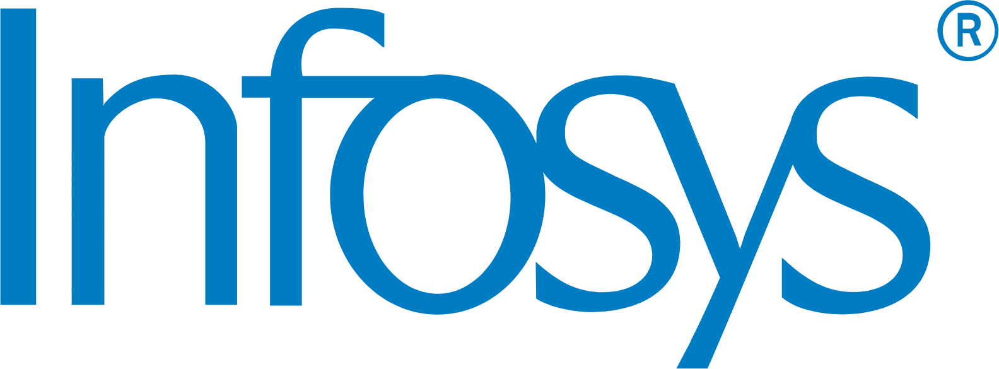
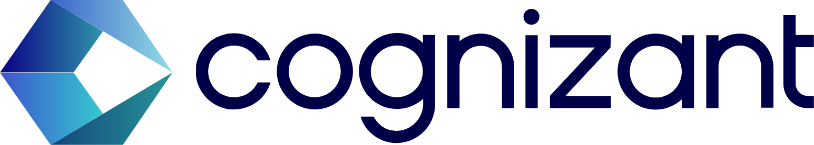
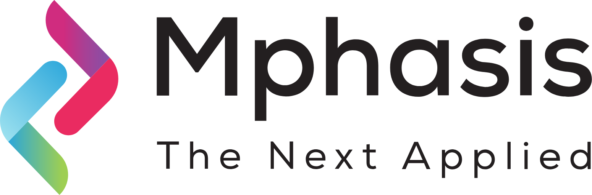
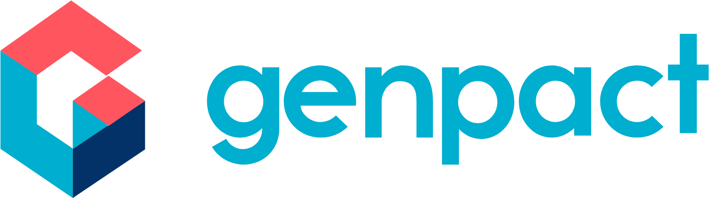

30K+Aspirants mentored
OUT OF 100, ONLY THE TOP 1% KNOW THIS SKILL—AND THEY ARE EARNING HIGH-INCOME PACKAGES NOW.
KNOWING FINANCE IS NOT ENOUGH IN 2027.YOU NEED THE ERP SKILL MOST FINANCE PROFESSIONALSARE HIDING FROM YOU AND THAT IS ORACLE FUSION FINANCIALS.
You know the numbers. Now build the ERP skills to put that knowledge to work. Configure financial processes, handle business scenarios and show what you can do in Oracle Fusion Financials.
Stop guessing what to learn next. Get a clear path from finance theory to hands-on practice—and prepare to explain your decisions with confidence in interviews.
Discover your next step at the free live demo · 30 November 2026, 8:00 PM IST.
Full course enrollment is separate.
Build practical experienceApply concepts to business scenariosStrengthen your interview answersExplain the thinking behind each stepMove forward with guidanceAsk questions and practise with direction
5,000+Students placed
60+Batches delivered
₹45 LPAHighest package
Across Tech Leads IT training programs, as reported by the institute. Individual career outcomes vary.
YOUR NEXT STEP STARTS HERE
Get clarity.
Then make your next move.
Join the free Oracle Fusion Financials demo. Meet your trainer, explore the practical skills you can build, and ask the questions that matter to you.
ACROSS TECH LEADS IT TRAINING PROGRAMS
From learning new skills
to joining leading companies.
Tech Leads IT reports 5,000+ placements across its training programs. These are some of the organisations where learners work.






4.9 out of 5

4.8 out of 5
CHECK YOURSELF
Where are you feeling stuck?
Be honest with yourself. Which of these have you been going through? Tick every one that feels true.
If you ticked even one of these, you’re in the right place. You need a clear direction to work towards the career and life you want. Here’s your challenge: take the first step. Join the free live demo. ↗
HEAR FROM ORACLE FUSION FINANCIALS LEARNERS
Here are the learners who seriously loved our training
and changed their career.
I’m happy that I chose Tech Leads IT for Oracle Fusion Financials training. Trainer Kaleem Basha delivered all the promised course content and provided clear explanations with practical examples. The additional facilities, like the mobile app and LMS portal for accessing recorded classes, are a huge advantage for learners who want to revise topics at their own pace. Thank you to Kaleem Basha and the Tech Leads IT team for a good learning experience and for helping me build confidence to step into the market.
SIRISALA BALA KRISHNAOracle Fusion Financials learner

I enrolled in Oracle Fusion Financials training at Tech Leads IT batch no 79, and it was a wonderful experience. Kaleem Basha is a knowledgeable trainer who delivers the promised content in a simple and practical way. The mobile app and LMS portal for recorded sessions are great features that not many institutes provide. These resources helped me revise concepts at my own pace. Thank you to the entire Tech Leads IT team for the support.
Thalla KarthikOracle Fusion Financials learner
Tech Leads IT provides quality training for Oracle Fusion Financials. Kaleem Basha is a patient and knowledgeable trainer who explains concepts with real-time scenarios, making them easy to understand. I especially liked the LMS portal, where I could watch recordings whenever needed, and the mobile app, which made learning flexible.
PAVAN KALYANOracle Fusion Financials learner
I had a good learning experience with Trainer Kaleem Basha for Oracle Fusion Financials at Tech Leads IT. The training was well-structured, and all the promised topics were covered in detail. The sessions were practical and helped me gain the confidence needed to enter the job market. A special thanks to Basha Ttainwr and the Tech Leads IT team
vinay kumarOracle Fusion Financials learner
I recently completed my Oracle Fusion Financials training under Basha Sir at Tech Leads IT, and it was truly a wonderful experience. Basha Sir teaches with real-time examples and follows a slow and clear pace, making sure every concept is thoroughly understood, regardless of your background. What truly sets him apart is his availability and support—he was always ready to clarify doubts at any point during the training. His dedication, practical approach, and deep knowledge made the learning journey incredibly smooth and effective. Thank you, Basha Sir, for sharing your expertise and guiding us with such patience and clarity. I highly recommend this training for anyone serious about building a career in Oracle Financials!
Shashank GajulaOracle Fusion Financials learner
I am from the 70th Oracle Fusion Financials Batch. The Oracle Fusion Financials Training was excellent, covering all implementation aspects in detail. Daily practice assignments were provided, and the trainer ensured consistent progress by reviewing our work regularly. Doubts were clarified effectively during the sessions, and the overall course structure was well-planned and easy to follow. This is the best Institute for Oracle Fusion Financials Training valuable for anyone looking to build a career in IT industry.
sai kethanaOracle Fusion Financials learner
Student testimonials shared by Tech Leads IT. Individual experiences vary.
A CAREER GOAL NEEDS A LEARNING PLAN
Build your skills.
One clear step at a time.
Understand the process, put it into practice, and learn to explain your decisions.
- 01 UNDERSTAND
Start with the business need
Understand the financial process and what it needs to achieve before opening Oracle Fusion.
Know why it matters - 02 APPLY
Put the process into practice
Connect setups, transactions and reports through guided exercises and a sample implementation project.
See how it works - 03 EXPLAIN
Build confidence in your answers
Review your work, clarify doubts and practise explaining your approach to interview scenarios.
Show what you understand
EXPLORE THE FULL COURSE CURRICULUM
Follow the financial cycle.
Understand how it connects.
See what you’ll study across setups, payables, receivables, assets and reporting. Open a module for details, or download the full syllabus.
MEET YOUR TRAINERS
Experience behind the teaching.
People behind your progress.
Meet Kaleem Basha and Srinivas, our Oracle Fusion Financials experts. Join the demo to explore the teaching approach and discuss your learning goals.
ORACLE FUSION FINANCIALS EXPERT
Kaleem Basha
22+Years of experience
ExpertFusion Financial Consultant
ORACLE FUSION FINANCIALS EXPERT
Srinivas
18+Years of experience
ExpertFusion Financial Consultant
WHAT TO KNOW BEFORE YOU JOIN
Your questions deserve
straight answers.
Check the details here. Bring questions about your own situation to the demo.
Ask us at the free demo ↗What is free—the demo or the full course?
The live introductory demo is free. You can explore the course and ask questions before deciding whether to enroll. The full Oracle Fusion Financials course is paid separately.
Can I join without Oracle experience?
Yes. The course brochure lists graduates as eligible and does not require prior Oracle experience. Tell us your background so we can discuss your starting point and preparation.
Will I get hands-on practice?
The curriculum includes application practice, assignments, case studies and a sample implementation project. Ask the team about the application-access period for your batch before enrolling.
How long is the full course?
The brochure outlines approximately 2.5 months of training, with one-hour sessions Monday to Saturday and a project. The team will confirm the timetable for your batch.
Are recordings and career support included?
The brochure includes class recordings, resume guidance, interview questions and placement assistance. Ask about recording access and the support included in your batch. Placement assistance does not guarantee a job.
When is the next demo?
Submit the form and verify your mobile number. Our team will contact you with the next available demo schedule and joining details.
Is the course certificate an Oracle certification?
No. The course completion certificate is issued by Tech Leads IT. The brochure also includes Oracle certification preparation support, but earning an official Oracle certification is a separate process.
100% ONLINE · FREE INTRODUCTORY DEMO
You don’t need every answer.
Just a place to start asking.
Explore Oracle Fusion Financials with a trainer.
Understand the course before you choose it.
Free demo. No payment to attend. Full course enrollment is separate.